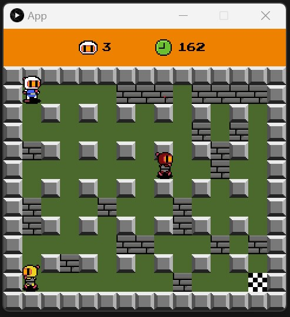

Simple Platformer
I recreated Bomber Man using OOP principles in Java. I used Gradle to build and run the project.
Controls
- Arrow Keys to move.
- Spacebar to place a bomb. (Watch out!)
I recreated Bomber Man using OOP principles in Java. I used Gradle to build and run the project.